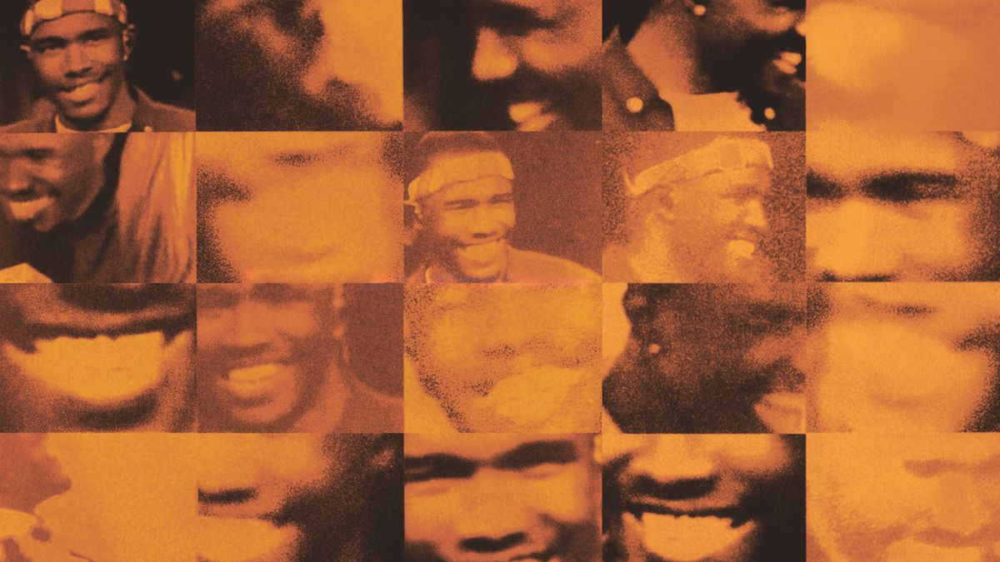
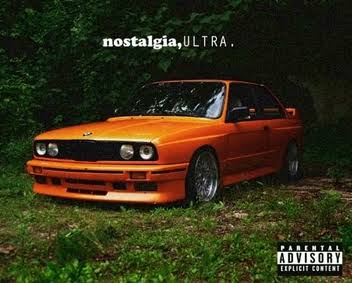
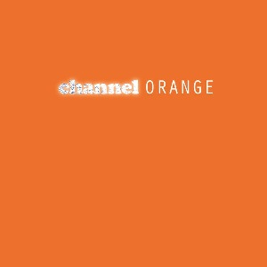
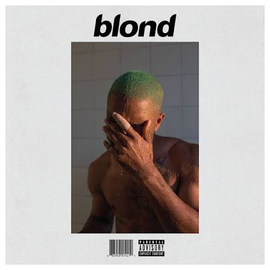

An artist beyond the boundaries of music

>
Foi sua primeira mixtape. A música aborda relacionamentos, juventude e experiências pessoais.
Seu segundo álbum de estúdio. A música aborda temas como identidade, amor e a experiência da juventude.
Um de seus projetos mais famosos. Explora sentimentos como amor, nostalgia, amadurecimento e identidade.| Música | Álbum |
|---|---|
| Thinkin Bout You | Channel Orange |
| Pyramids | Channel Orange |
| Super Rich Kids | Channel Orange |
| Pink + White | Blonde |
| Nights | Blonde |
| Ivy | Blonde |
Frank possui poucas curiosidades conhecidas.
Seu ultimo album foi lançado em 2016, e desde então ele não lançou mais nada. #voltafrankocean
Frank escolheu seu nome artístico inspiradon no cantor Frank Sinatra e o filme Ocean's Eleven (1960).
Frank Ocean em 2021, lançou a marca de luxo Homer que vende joalheria de luxo.
Ele criou uma revista chamada Boys Don't Cry, que acompanha o lançamento de seu álbum Blonde.
Antes dele se tornar famoso, escrevia músicas para outros cantores.
Além da música, também trabalha com imagens e projetos visuais.
Frank Ocean, nascido Christopher Edwin Breaux em 28 de outubro de 1987, é um cantor, compositor e produtor musical americano. Ele é conhecido por seu estilo musical único, que combina elementos de R&B, soul e hip-hop. Ocean ganhou reconhecimento com sua mixtape "Nostalgia, Ultra" em 2011 e desde então lançou álbuns aclamados pela crítica, como "Channel Orange" e "Blonde". Além de sua música, ele também é conhecido por sua abordagem artística e visual inovadora.